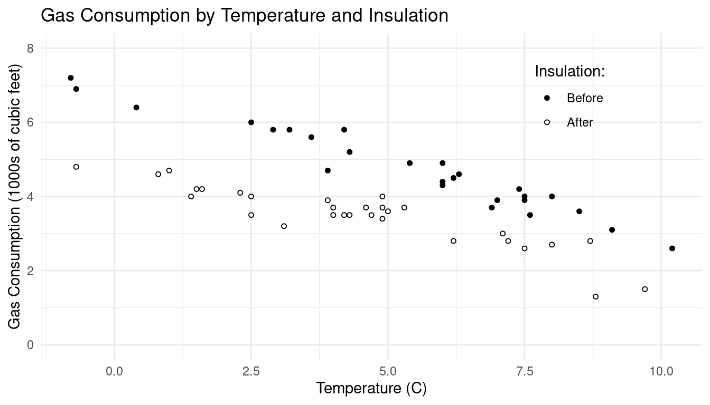
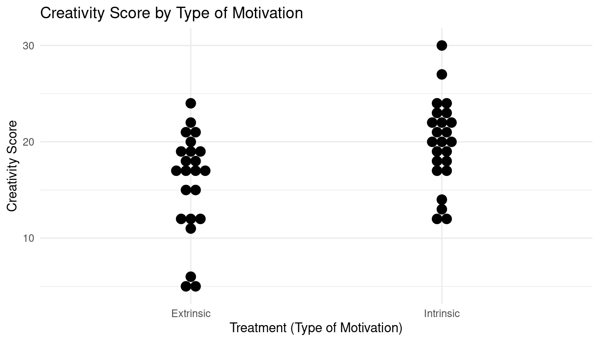
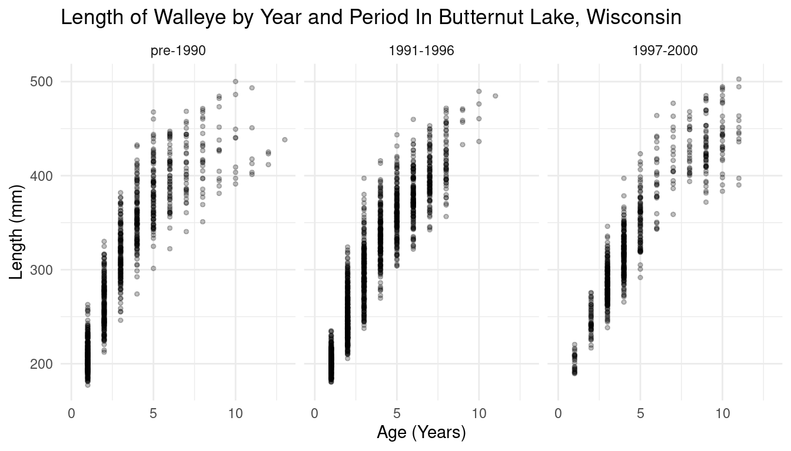
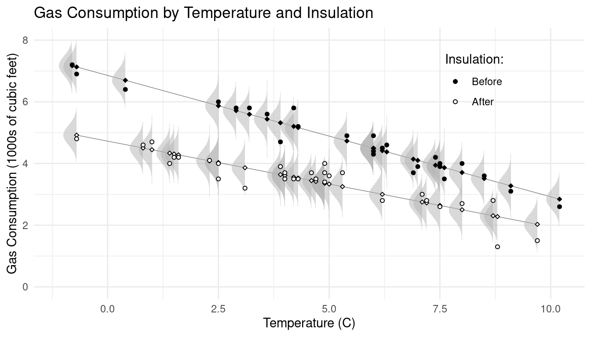
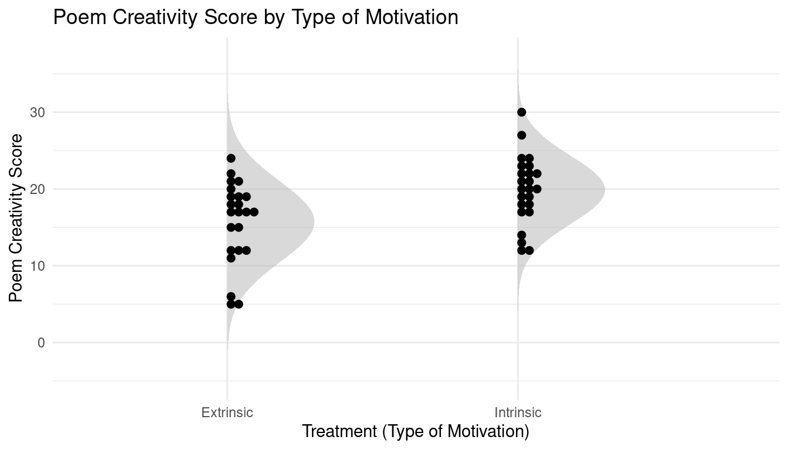

You can also download a PDF copy of this lecture.
| Week | Gas | Insulation | Temp |
|---|---|---|---|
| 1 | 4.5 | Before | 6.2 |
| 2 | 3.1 | Before | 9.1 |
| 3 | 3.9 | Before | 7 |
| \(\vdots\) | \(\vdots\) | \(\vdots\) | \(\vdots\) |
| 26 | 5.8 | Before | 4.2 |
| 28 | 2.8 | After | 7.2 |
| 29 | 3.2 | After | 3.1 |
| 30 | 4 | After | 1.4 |
| \(\vdots\) | \(\vdots\) | \(\vdots\) | \(\vdots\) |
| 57 | 1.3 | After | 8.8 |

Example: Creative writing students were treated or “primed” with either extrinsic or intrinsic motivation. They were then asked to write a poem in the Haiku style about laughter. Each poem was then scored for “creativity” on a 40-point scale by 12 judges. These scores were then averaged across the 12 judges for each student.
| Score | Treatment |
|---|---|
| 5 | Extrinsic |
| 5 | Extrinsic |
| 6 | Extrinsic |
| \(\vdots\) | \(\vdots\) |
| 24 | Extrinsic |
| 12 | Intrinsic |
| 12 | Intrinsic |
| 13 | Intrinsic |
| \(\vdots\) | \(\vdots\) |
| 30 | Intrinsic |

Example: These are data on 3198 walleye captured in Butternut Lake, Wisconsin, during three periods with different management methods in place.
| Length | Age | Period |
|---|---|---|
| 215 | 1 | pre-1990 |
| 193 | 1 | pre-1990 |
| 203 | 1 | pre-1990 |
| 201 | 1 | pre-1990 |
| 232 | 1 | pre-1990 |
| \(\vdots\) | \(\vdots\) | \(\vdots\) |
| 397 | 11 | 1997-2000 |

We might consider a model for the distribution of the response variable, where one or more properties of the distribution of \(Y\) are functions of the explanatory variable(s).


One common property of the distribution of a response variable is the mean or expected value of the variable.
We let \(Y_i\) denote the \(i\)-th observation of a response variable, and \(X_{ij}\) denote the \(i\)-th observation of the \(j\)-th explanatory variable. Assume \(n\) observations (\(i = 1, 2, \dots, n)\) and \(k\) explanatory variables (\(j = 1, 2, \dots, k\)).
\[ \begin{array}{cc} Y_1 & X_{11}, X_{12}, \dots, X_{1k} \\ Y_2 & X_{21}, X_{22}, \dots, X_{2k} \\ \vdots & \vdots \\ Y_n & X_{n1}, X_{n2}, \dots, X_{nk} \end{array} \] Sometimes when it is not necessary to refer to a specific observation, we will omit the \(i\) subscript to denote the response variable and explanatory variables as follows. \[ \begin{array}{cc} Y & X_{1}, X_{2}, \dots, X_{k} \end{array} \] How do we usefully model the statistical relationship between the response variable (i.e., \(Y\)) and one or more explanatory variables (i.e., \(X_{1}, X_{2}, \dots, X_{k}\))?
The expected value of a random variable \(Y\) is defined as \[ E(Y) = \sum_y y P(Y = y) \] if it is discrete, and \[ E(Y) = \int\limits_{-\infty}^{\infty} yf(y)dy \] if it is continuous. Note that by convention, an upper-case letter (e.g., \(Y\)) denotes a random variable whereas a lower-case letter (e.g., \(y\)) denotes a value or realization of that random variable.
Most regression models focus on the mathematical relationship between the expectation of the response variable to the value(s) of the explanatory variable(s). That is, \(E(Y)\) is a function of \(x_{1}, x_{2}, \dots, x_{k}\).
One way to write a regression model is \[ E(Y) = f(x_{1}, x_{2}, \dots, x_{k}), \] where \(f\) is some specified function. For example, \[ E(Y) = \beta_0 + \beta_1 x, \] where the subscript is dropped without loss of clarity from \(x_{1}\) as there is only one explanatory variable. With two or more explanatory variables we might have \[ E(Y) = \beta_0 + \beta_1 x_{1} + \beta_2 x_{2} + \cdots + \beta_k x_{k}. \] These are examples of linear models (more on that soon). We will also consider nonlinear models like \[ E(Y) = \alpha + (\delta - \alpha)e^{-x\log(2)/\gamma}. \] Typically the function will involve constants (e.g., \(\beta_0, \beta_1, \dots, \beta_k\) or \(\alpha\), \(\delta\), and \(\gamma\)) that are unknown, but often of interest. These are the parameters of the regression model.